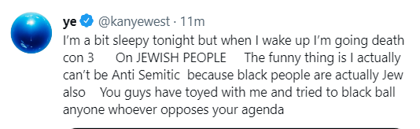

The artist formerly known as ‘Kanye West’ or Ye has recently been under fire for a flurry of statements he has made over the past month. He has appeared in several interviews in order to try to clear the air and explain what made him say what he said. However, in every interview, he was upset that it was never considered what made him say what he did.

Most recently, a fan did a quick interview with Ye where Ye had seemingly gone fully into the idea that the industry is fully corrupt and that Jewish power in the media is colluding with Jewish power in music and fashion when the reality is likely that nobody is willing to provide him the stage where he will more than likely spread these same ideas. “Exactly what I had claimed they were gonna do has started to be done, you saw they took down the interviews, they tried to sound byte everything up, and they tried to not understand what our frustrations are.”
Ye unleashed more anger on the U.S. government saying, “What they do is take the Black community and they separate us, they separate the families.” Referring to the pressure his mom went through with her colleagues at Chicago State University, to cut ties with his father, for reasons Ye does not get into other than blaming higher education.
Media Appearances
In 2013, after the release of his divisive album 'Yeezus', Ye was Interviewed by The Breakfast Club,
to
discuss topics touched on by his contreversial song 'New Slaves' and his new deal with Adidas and
the
break-up with Nike.
Also in 2013, Ye appeared on the Sway in the Morning Show to discuss his ventures in starting his
own
fashion line and his deals with Louis Vuitton, Nike, Adidas, Balenciaga, and many other luxury
fashion
companies.
On October 6th, 2022, Ye was interviewed by Tucker Carlson after his YZY SZN 9 fashion show in Paris
where
he and Candace Owens wore White Lives Matter shirts.
Ye appeared on Piers Morgan Uncensored on October 21st, 2022 and was interviewed about many
topics.
In October of 2022, a fan conducted an interview with Ye in a outside of an unknown building. In the
interview, Ye calls out George Soros, a Jewish Hungarian-American businessman.
Ye was a guest on the Lex Fridman Podcast on October 24th, 2022 to discuss a variety of topics,
however in this article, a focus will be put on the sections discussing The Holocaust, antisemitism,
and media.
On October 26th, 2022 Ye did an informal interview in a parking lot with a fan where he discussed
how
his story has been hidden from the public and control over his companies.